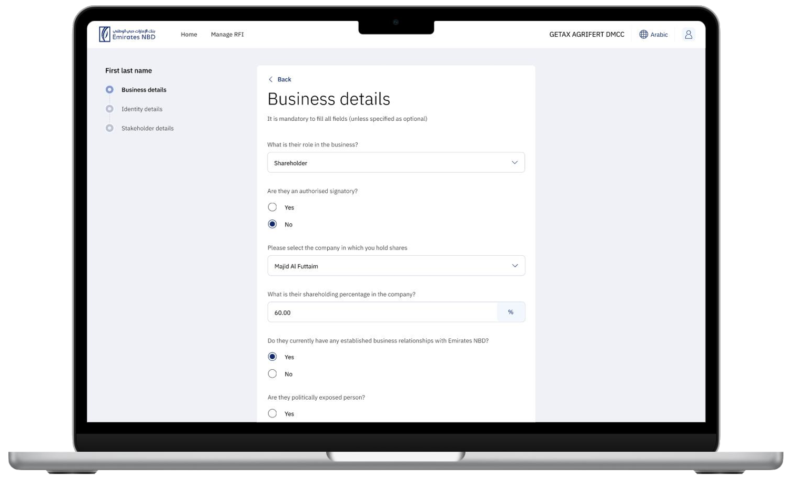
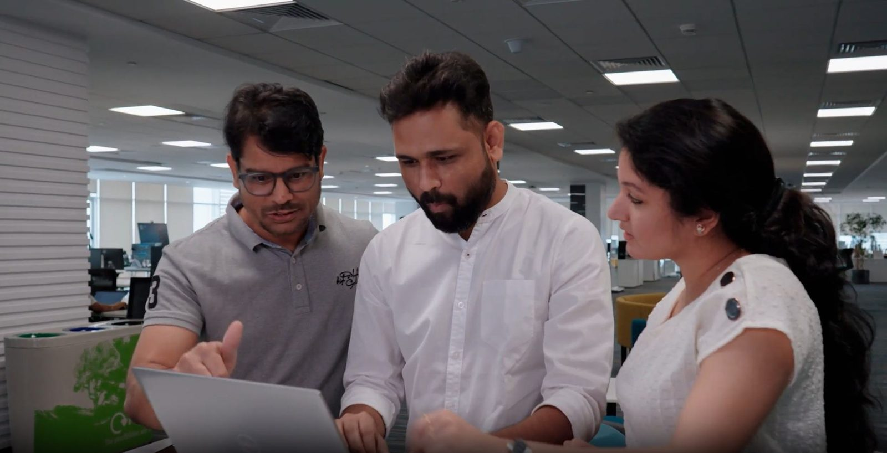
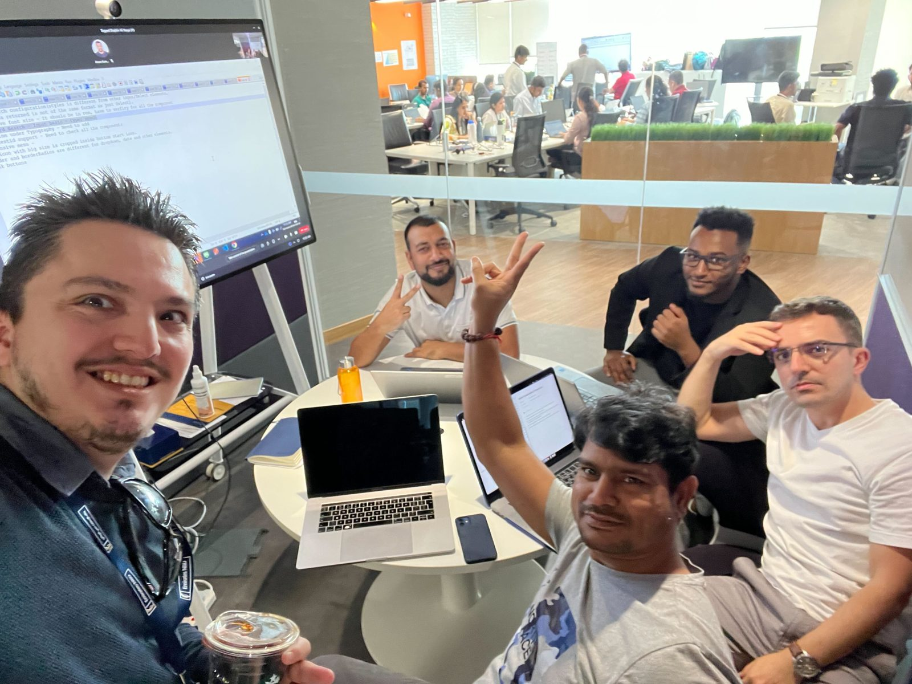
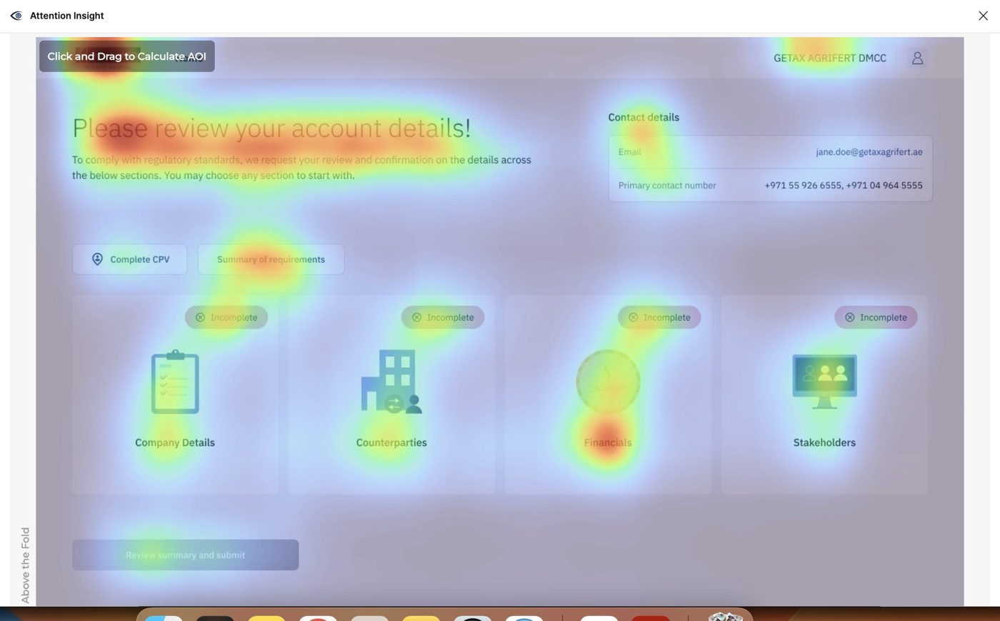
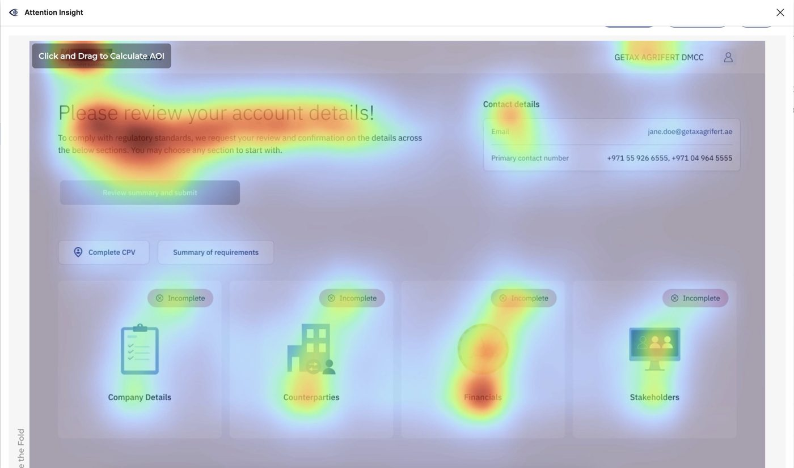
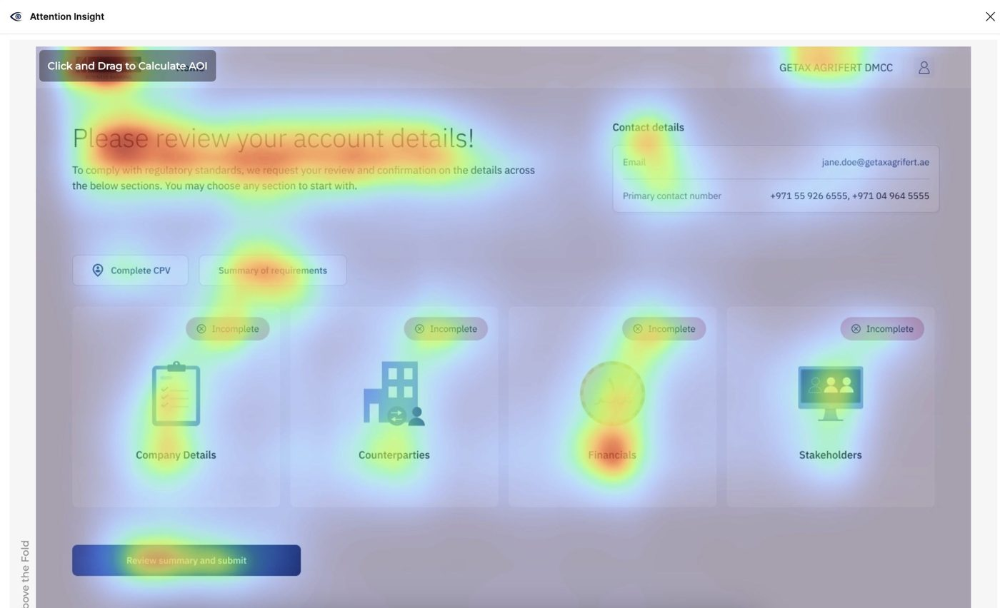
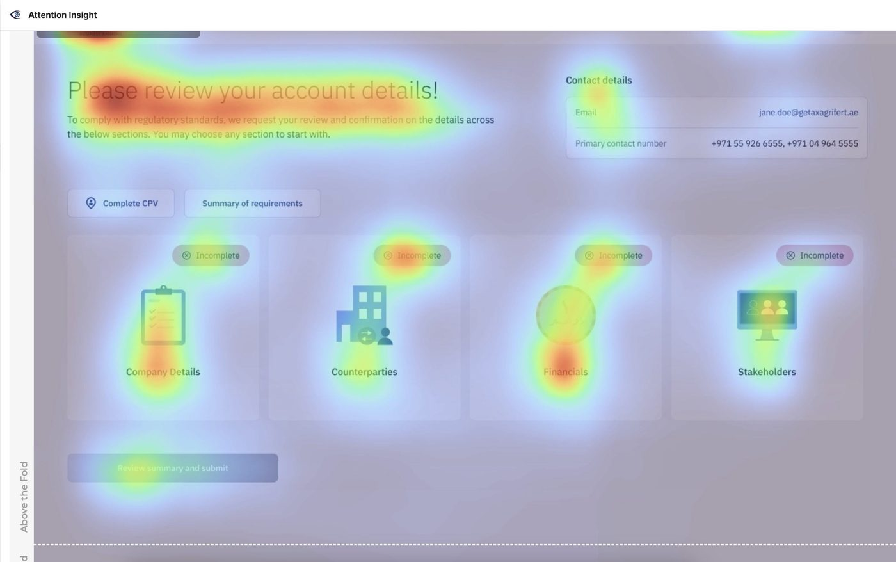

High-Risk Account Review: a compliance platform that helps banks monitor, manage and act on high-risk business accounts.
A mandatory yearly check that financial institutions must perform on business customers classified as high-risk. Customers may be flagged for:
These checks keep the bank compliant with KYC and CDD regulations, which carry serious legal and reputational consequences if neglected.
Stakeholder interviews with compliance officers, relationship managers and IT. Mapped existing workflows to surface pain points and critical failure modes.
Synthesised research into journey maps and a clear problem statement. Ran prioritisation workshops with the Product Owner and Business Analyst.
Iterative wireframes in Figma, and a shared design system for consistency across tables, modals, status flows and audit trail views.
Moderated usability sessions with the research team. Aligned with the Solution Architect and dev leads on technical constraints before handoff.

Four stakeholder groups made sure every design decision was grounded in technical feasibility, business value and regulatory compliance.


Quick and long-form testing sessions with the Research team, whenever we were in doubt.



